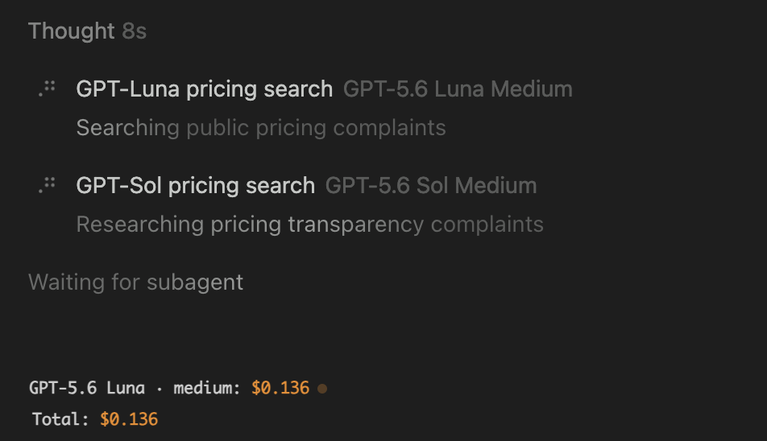
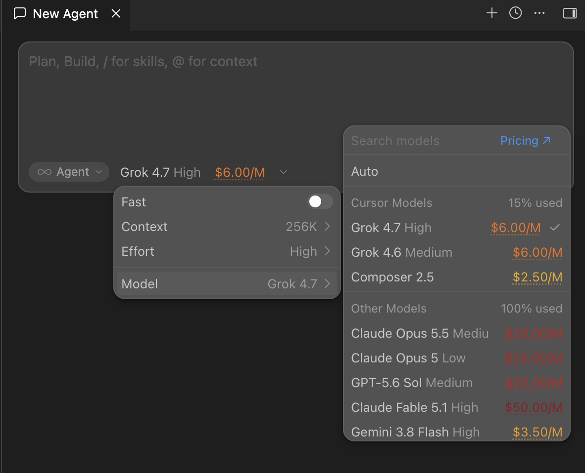
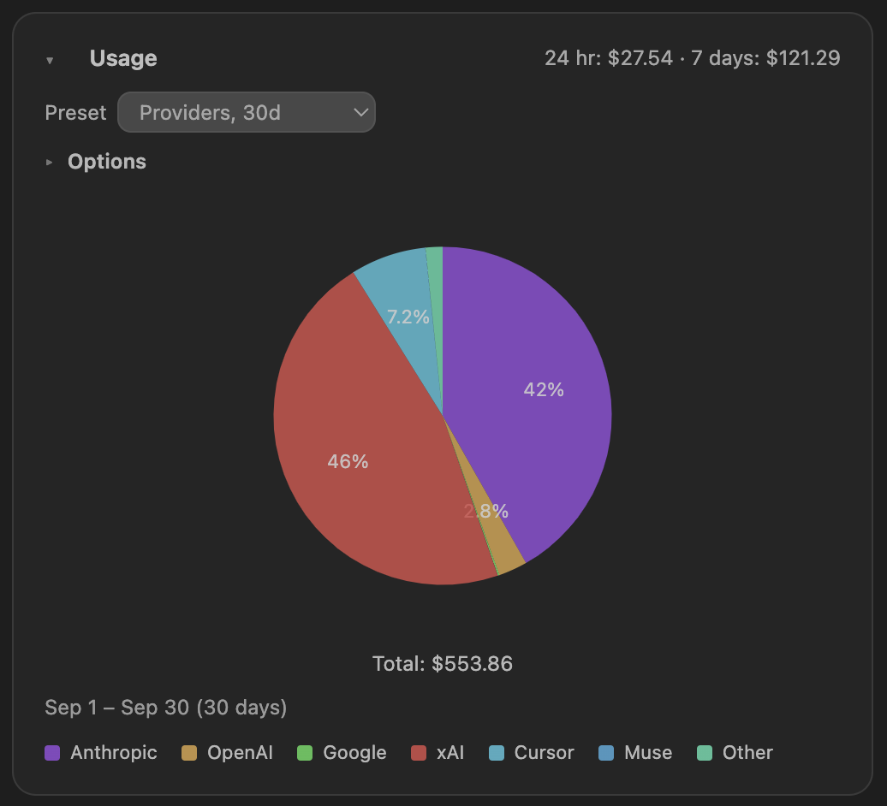
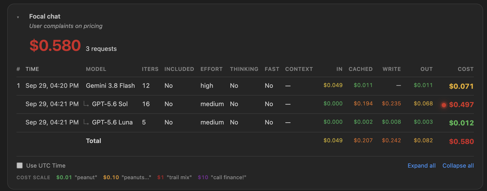
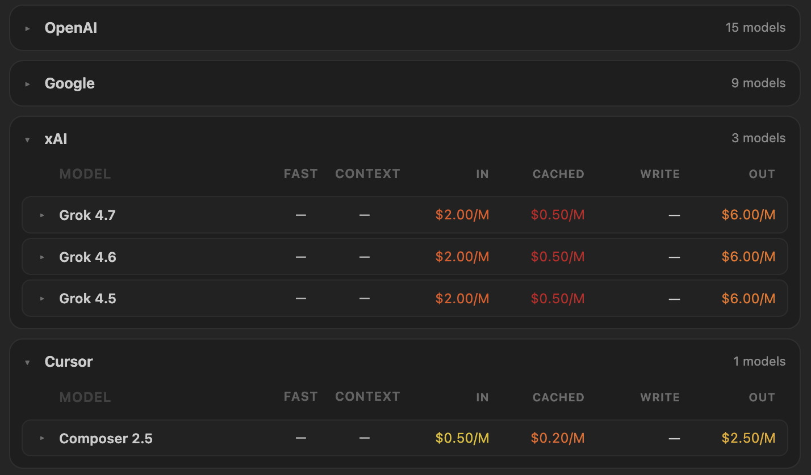

Real-time usage cost while you code — live spend from your Cursor account, always visible
Model costs in context — per-turn spend in chat and rates in the picker before you choose
Graphical spend analytics — trends, billing periods, and breakdowns by model, project, and provider
Ask about your usage — ask the agent how much you spent, which models you used, or what a model costs. It answers from your local usage and opens the matching graph
Usage stays on your machine. Token counts and request metadata are cached locally. Pricing fetches send a random install id, described under Privacy.
Screenshots

Per-turn cost in chat

Model picker rates

Usage graph

Focal chat (sidebar)

Pricing table
Ask about usage
Ask in chat, for example “how much did I spend this week?” or “which model is good value?”. Spendgeist gives the agent your local totals and rates, then opens the usage graph or the pricing table.
This is installed with the extension. It answers only while Spendgeist is running in that Cursor window.
Pricing data
This site and the GitHub repo hold the Cursor pricing table the extension downloads.
Each pricing fetch includes a random install id created on your machine. It is not tied to an account. This site stores that id with the first fetch time, the latest fetch time, and how many times pricing was fetched.
Request metadata and token counts stay in local extension storage.
When you ask the agent about usage, that question’s totals and rates go to the model you are already chatting with. Prompts and the usage records stay on your machine.
Cursor usage API uses your existing Cursor sign-in to read dashboard data — cached locally only.